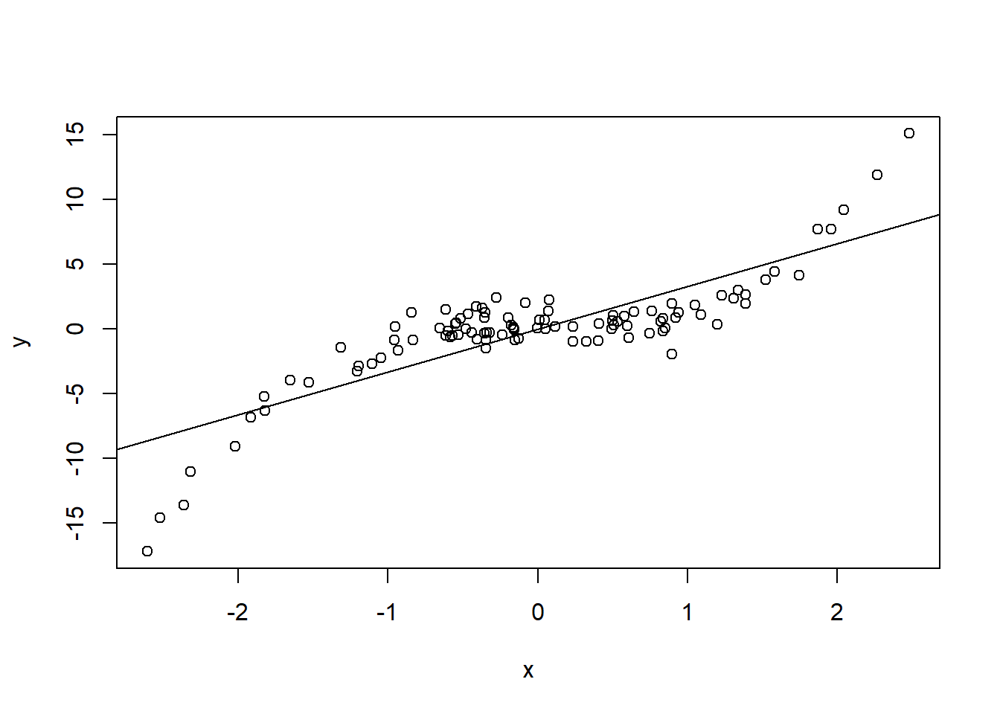
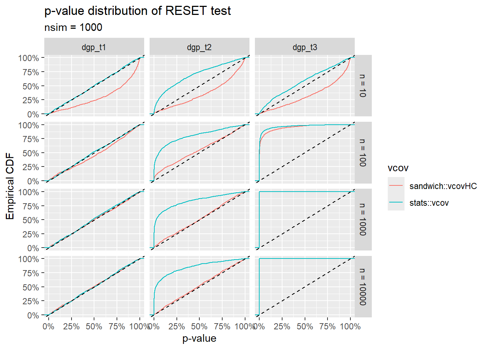

![]()
set.seed(840)
x <- rnorm(1e2)
y <- x^3 + rnorm(length(x))
plot(x, y)
abline(lm(y ~ x))
Some options in R, using the {lmtest} package.
July 11, 2023
Another one from the series on “misspecified regression models” (started with Model Misspecification and Linear Sandwiches).
Lately I’ve been messing around with the {lmtest} R package, a nice collection of hypothesis tests for classical linear model assumptions: linearity (of course) and heteroskedasticity (\(X\)-independence of the conditional variance).
Just to clarify, here the relevant “linearity” assumption is that the conditional mean \(\mathbb E (Y\vert X)\) is given by a linear combination of known functions \(f_i\) of \(X\):
\[ \mathbb E (Y\vert X) = \sum _{i = 1}^p \alpha_if_i(X), \] Testing “linearity” (or, as the title goes, “functional specification”) refers to testing that the chosen set of functions \(\{f_{i}\}_{i=1,\dots,p}\) provide a valid description of the data generating process.
My initial intuition was that it should be possible to test functional specification through the following procedure:
lmtest::dwtest) on the series of ordered residuals.The idea is quite simple: if residuals exhibit some systematic pattern when plotted against \(X\), then for close values of \(X\), residuals should also tend to be close, leading to a positive correlation. For example:
This, I suspect, is the reason why functions such as lmtest::dwtest() have an order.by argument which precisely allows to sort residuals before performing the test.
Unfortunately, it turns out that such a method is not only sensitive to functional misspecification, but also to heteroskedasticity - as one can quickly verify by running a simulation using lmtest::dwtest().
The overall idea is interesting, and works for homoskedastic noise, but the limitation to constant variance may be a bit too stringent. For this reason I turned to a second method, which also allows to take into account the possibility of heteroskedastic noise.
The idea of RESET tests (see ?lmtest::resettest()) is also quite simple: if the linear model is correct, there should be relatively little gain in adding additional non-linear functions of the original covariates to the fit’s formula.
The statistical significance of these model adjustments can be tested through a standard \(Z\)-test (or \(F\)-test, for multiple adjustments at once), with an important catch: the covariance matrix of regression coefficients used in these tests can be chosen to be robust to heteroskedasticity (see Model Misspecification and Linear Sandwiches).
The code that follows illustrates this procedure with an example dataset. The following section contains a more in-depth simulation study of the property of the RESET test.
RESET test
data: fit_cars
RESET = 2.32, df1 = 1, df2 = 48, p-value = 0.1344Unfortunately, the output of lmtest::resettest does not include the results of the extended fit, which can be useful to understand the impact of the omitted covariates on the overall model picture (independently of the RESET \(p\)-value under the null hypothesis). 2
In order to get some insight on the effect of misspecification, we need to manually perform the RESET fit and make the relevant comparisons:
We consider a univariate regression problem, with a regressor \(X \sim \mathcal N (0,1)\), a and a response \(Y\). We will consider three ground truth distributions for \(Y\) given \(X\):
\[ \begin{split} \text{T1}:& \qquad Y=\frac{1}{5}X+Z\\ \text{T2}:& \qquad Y=\frac{1}{5}X + \vert X \vert Z\\ \text{T3}:& \qquad Y=\frac{1}{5}X^3 + Z \end{split} \] where \(Z\sim \mathcal N (0,1)\) is independent from \(X\). We will study, through simulation, the \(p\)-value distribution of the RESET test for linear regression based on the model \(Y = q+m X + \varepsilon\), where \(q\) and \(m\) are unknown coefficients, and \(\epsilon\) is a noise term with unknown variance. It follows that the model is correctly specified with respect to \(\text{T1}\), has functional misspecification with respect to \(\text{T3}\), and potentially noise misspecification3 with respect to \(\text{T2}\), if we model variance as being independent of \(X\).
Data will consist of independent samples \((X_i, Y_i)\) from the joint distribution of \(X\) and \(Y\). To facilitate simulation, we define some helpers in the code chunk below.
#' Helper to generate data with prescribed:
#' * Regressor distribution: `x`
#' * Response conditional mean: `f`
#' * Response conditional noise: `eps`
dgp_fun <- function(x, f, eps) {
function(n) {
.x <- x(n)
data.frame(x = .x, y = f(.x) + eps(.x))
}
}
#' Helper to simulate results of linear regression, with prescribed:
#' * Data generating process: `dgp`
#' * Sample size of simulated datasets: `n`
#' * Summary function (e.g. p-value of RESET test): `summarize_fun`
lm_simulate <- function(dgp, n, summarize_fun, nsim, simplify) {
replicate(nsim, {
data <- dgp(n)
fit <- lm(y ~ x, data)
summarize_fun(fit)
}, simplify = simplify)
}
#' Helper to perform RESET test on a `lm` fit object, and plot the p-value
#' distribution. The estimator for regression coefficients variance-covariance
#' matrix can be set through the `vcov` argument.
reset_pvalue <- function(
dgp, n, # Data generating process params
power = 2:3, type = "regressor", vcov = sandwich::vcovHC, # RESET params
nsim = 1e3 # Simulation params
)
{
summarize_fun <- function(fit)
lmtest::resettest(fit, power = power, type = type, vcov = vcov)$p.value
p <- lm_simulate(
dgp = dgp,
n = n,
summarize_fun = summarize_fun,
nsim = nsim,
simplify = TRUE
)
return(data.frame(
p = p,
dgp = deparse(substitute(dgp)),
n = n,
vcov = deparse(substitute(vcov)),
nsim = nsim
))
}Furthermore, we will use:
for plotting.
The data generating processes can be defined as follows:
Data generated according to these three distributions looks as follows:
The RESET \(p\)-value cumulative distributions for the three ground truths \(\text{T1}\), \(\text{T2}\) and \(\text{T3}\) are shown below 4. The \(y\) coordinates of these plots can be interpreted as follows:
For the ground truths \(\text{T1}\) and \(\text{T2}\), \(y\) represents the false positive rate (or Type I Error Rate) in rejecting the null hypothesis “no functional misspecification” at a given size of the test \(x\). For a valid \(p\)-value, these curves should lie on or below the straight line \(y = x\).
For the ground truth \(\text{T3}\), \(y\) represents the Power (or one minus the Type II Error Rate) in detecting functional misspecification at a given size \(x\). High values correspond to high sensitivity.
sim_data <- dplyr::bind_rows(
reset_pvalue(dgp = dgp_t1, n = 10, vcov = sandwich::vcovHC),
reset_pvalue(dgp = dgp_t1, n = 100, vcov = sandwich::vcovHC),
reset_pvalue(dgp = dgp_t1, n = 1000, vcov = sandwich::vcovHC),
reset_pvalue(dgp = dgp_t1, n = 10000, vcov = sandwich::vcovHC),
reset_pvalue(dgp = dgp_t1, n = 10, vcov = stats::vcov),
reset_pvalue(dgp = dgp_t1, n = 100, vcov = stats::vcov),
reset_pvalue(dgp = dgp_t1, n = 1000, vcov = stats::vcov),
reset_pvalue(dgp = dgp_t1, n = 10000, vcov = stats::vcov),
reset_pvalue(dgp = dgp_t2, n = 10, vcov = sandwich::vcovHC),
reset_pvalue(dgp = dgp_t2, n = 100, vcov = sandwich::vcovHC),
reset_pvalue(dgp = dgp_t2, n = 1000, vcov = sandwich::vcovHC),
reset_pvalue(dgp = dgp_t2, n = 10000, vcov = sandwich::vcovHC),
reset_pvalue(dgp = dgp_t2, n = 10, vcov = stats::vcov),
reset_pvalue(dgp = dgp_t2, n = 100, vcov = stats::vcov),
reset_pvalue(dgp = dgp_t2, n = 1000, vcov = stats::vcov),
reset_pvalue(dgp = dgp_t2, n = 10000, vcov = stats::vcov),
reset_pvalue(dgp = dgp_t3, n = 10, vcov = sandwich::vcovHC),
reset_pvalue(dgp = dgp_t3, n = 100, vcov = sandwich::vcovHC),
reset_pvalue(dgp = dgp_t3, n = 1000, vcov = sandwich::vcovHC),
reset_pvalue(dgp = dgp_t3, n = 10000, vcov = sandwich::vcovHC),
reset_pvalue(dgp = dgp_t3, n = 10, vcov = stats::vcov),
reset_pvalue(dgp = dgp_t3, n = 100, vcov = stats::vcov),
reset_pvalue(dgp = dgp_t3, n = 1000, vcov = stats::vcov),
reset_pvalue(dgp = dgp_t3, n = 10000, vcov = stats::vcov)
)
sim_data |>
mutate(n_label = paste("n", n, sep = " = ")) |>
ggplot(aes(p, color = vcov)) +
stat_ecdf() +
scale_color_discrete("vcov") +
scale_x_continuous("p-value", labels = scales::percent) +
scale_y_continuous("Empirical CDF", labels = scales::percent) +
geom_abline(slope = 1, intercept = 0, linetype = "dashed") +
facet_grid(n_label ~ dgp, ) +
ggtitle(
"p-value distribution of RESET test",
paste("nsim", max(sim_data$nsim), sep = " = ")
)
The plots illustrate qualitatively the behavior of the RESET test with and without the vcov correction for noise heteroskedasticity. Various remarks:
The test with the standard stats::vcov estimator is sensitive not only to pure functional misspecification (\(\text{T3}\)), but also to pure heteroskedastic noise (\(\text{T2}\)).
The sandwich::vcovHC estimator leads to an asymptotically correct Type I Error Rate in the \(\text{T2}\) case, but to a somewhat lower sensitivity (with respect to stats::vcov) in the \(\text{T3}\) case.
We need to keep in mind that sandwich::vcovHC only provides asymptotically correct variance-covariance estimates. Thus, for small \(n\), the \(p\)-value distribution of the RESET test using the sandwich::vcovHC can also be distorted (even in the perfectly specified case \(\text{T1}\)).
This post explained how to perform model validation checks that are sensitive to functional misspecification, but relatively robust to heteroskedasticity.
The general idea is to extend the original model, allowing for more general functional forms in the conditional mean of the response, and test whether such extension significantly improves the fit. The catch is that, when performing the latter test, we need to somehow keep into account the possibility of heteroskedastic noise.
This idea is readily implemented with RESET tests for linear models: one can simply use a variance-covariance estimator for regression coefficients that is robust to heteroskedasticity. In R, this can be achieved with a single line of code, using lmtest::resettest(vcov = sandwich::vcovHC).
With some effort, one may be able to generalize such a procedure to any parametric model fitted by Maximum Likelihood Estimation, since a sandwich estimator is available also in this more general case (see e.g. the presentation of sandwich estimators in this paper by D.A. Freedman).
Here I’m implicitly assuming that we have a single \(X\), but a similar logic should also apply to multivariate regression.↩︎
With enough data, the RESET test would likely test positive for a variety of misspecifications, but that doesn’t mean that such misspecification are necessarily relevant from a modeling perspective. Here, for instance, a large coefficient for \(\text{(speed)}^2\) with a \(Z\)-score of two \(\sigma\)s could be more worrying than a minuscule coefficient with a \(Z\)-score of five \(\sigma\)s.↩︎
Sometimes also referred to as “second order misspecification”.↩︎
The code is a bit unelegant 😬 but it works.↩︎
@online{gherardi2023,
author = {Gherardi, Valerio},
title = {Testing Functional Specification in Linear Regression},
date = {2023-07-11},
url = {https://vgherard.github.io/posts/2023-07-11-testing-functional-specification-in-linear-regression/},
langid = {en}
}